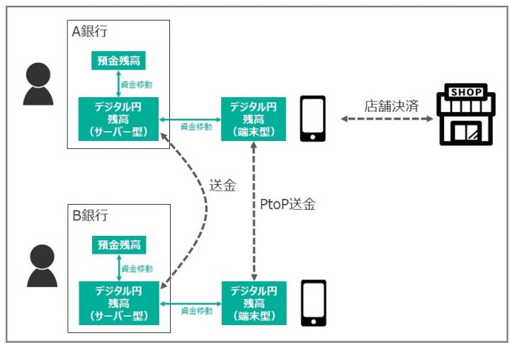

グローバルで取り組みが加速している中央銀行デジタル通貨（Central Bank Digital Currency; CBDC）。前回記事では世界の中央銀行の背中を押した３つの動きを振り返りました。今回はCBDCを設計する上での留意点と、日本銀行による検討のポイントをまとめます。
この記事はカードウェーブ誌２０２１年１月・２月号の特集レポート「中央銀行デジタル通貨のインパクト 日本版CBDCに必然性はあるか」の一部を加筆修正したものです。
関連記事：
- 「中銀デジタル通貨CBDCをもたらした３つの動き」、インフキュリオン・インサイト、２０２１年４月５日
「一般利用型CBDC」の４つの性質
世界の８割を超える中央銀行が発行を検討しているというCBDC。日本銀行はというと、「現時点でCBDCを発行する計画はないが、今後の様々な環境変化に的確に対応できるよう、しっかり準備しておく」というのが公式スタンスです。２０２１年度にはシステム的な実験環境を用いた概念実証を予定しており、４月５日に概念実証フェーズ１がスタートしています。今のところは一般個人を巻き込んだパイロット実験まではスコープ外とのことですが、将来もしデジタル通貨発行に舵を切るようなことんあった場合も想定し具体検討を進めておく、ということでしょう。
参考情報：
- 「中央銀行デジタル通貨とは」、日本銀行
- 「中央銀行デジタル通貨に関する実証実験の開始について」、日本銀行、２０２１年４月５日
日本銀行が検討しているのは、個人や企業を含む幅広い主体を対象とする「一般利用型CBDC」。中央銀行と市中銀行のみを対象とする「ホールセール型CBDC」は銀行間送金の媒体といった感が強いですが、一般利用型の場合は現金とほぼ同等の役割が期待されます。
それでは、現金が持つ様々な性質のうち、一般利用型CBDCにおいても実現しておくべきものは何でしょうか。麗澤大学の中島真志博士によると、それは以下の４つです。
- 汎用性があること
- 転々流通可能なこと
- 手数料が無料であること
- ファイナリティがあること
参考情報：
- 「いまさら聞けないCBDC 日銀がPayPayの競合になる？」、ITmediaビジネスONLINE、２０２０年１１月４日
読者にとっては聞きなれない用語かもしれません。クレジットカード、FeliCa型電子マネー、コード決済アプリなどの民間キャッシュレスサービスと比較しながら説明します。
まず汎用性、「国内のどこでも使えること」。現金は確かにどこでも受け取ってもらえますが、民間のキャッシュレス決済サービスは加盟店でしか利用できませんので、汎用性は備えていません。
転々流通とは、個人や法人の間で繰り返し譲渡可能なこと。現金は転々流通していきますが、民間キャッシュレス決済サービスは基本的に個人から加盟店への支払いを念頭に設計されているため、転々流通という概念がありません。一部のサービスではプリペイド残高をユーザー間で送りあうことが可能ですが、現金と比べると限定的ですし、加盟店からユーザーへの送金もできません。
次に手数料ですが、現金はもちろん無料。現金を誰かに渡すときに、いつのまにが価値が目減りするようなことはありません。民間キャッシュレス決済サービスは加盟店から受け取る手数料で成り立っています。ユーザーが買い物しキャッシュレス決済をすると、お店は手数料を差し引かれた金額を受け取っているのです。
最後にファイナリティ。これは「譲渡時点で精算が完了する」という性質のこと。「現金その場限り」とも言われるように、現金は譲渡してしまえばそれで完了、後処理などは必要ありません。しかし民間キャッシュレス決済サービスでは、ユーザーが店舗で決済しても、店舗への実際の支払いのための後処理が必要ですので、ファイナリティを備えていないのです。
日本銀行は一般利用型CBDCについて「現金と並ぶ決済手段」と位置付けています。ということは当然、上記の４つの性質を備えたデジタル通貨を検討していると思われます。
- どこでも受け取ってもらえる汎用性を備え、
- 個人や法人の間で自由に譲渡が可能であり、
- 手数料はかからず、
- 仲介者による後処理不要で、渡した時点で取引完了となるファイナリティを持っている、
ということになります。
こうした性質を全て備えたデジタル通貨は確かに利用者にとってとても便利なものであることは間違いないでしょう。逆に、既存の決済事業者にとっては大きな脅威でもあると同時に、大きな機会をもたらすものでもあります。既存の決済サービス市場を激変させてしまうほどのインパクトを、一般利用型CBDCは持っているのです。
日本銀行が市場破壊を目的にCBDC発行するはずがありませんので、日銀によるCBDC検討においては実現性とともに既存市場への悪影響の回避が重視されることでしょう。そうした意味でも、２０２１年度の実証実験から得られる示唆には注目です。
「間接型CBDC」と「直接型CBDC」
CBDCの発行形態については、日本銀行は「間接型」を採用する方針です。これは、日銀は市中銀行に対してCBDCを発行し、市中銀行が一般個人・法人にCBDCを配布するという形態のこと。従来からの中央銀行と市中銀行の関係をそのまま維持したもので、特に違和感はありません。
「間接型」ではない形態としては「直接型」があります。これは、中央銀行が一般個人・法人に対してCBDCを発行するものですが、実現しようとすると大きな問題が幾つも出てきます。
まず直接型では、国民一人ひとりが中央銀行に口座をもつことになります。中央銀行がCBDCという名の電子マネーのイシュア（発行者）になったと考えるとわかりやすいでしょう。この点だけでも、中央銀行の現在の職務から大きく外れてしまうのですが、問題はそれだけではありません。
CBDCを直接発行するからには、それが利用できないといけません。利用のためのCBDCアプリの開発・配布・保守も全て中央銀行の責任になります。マネーロンダリング対策や不正対策も必須です。経験もノウハウもない中央銀行がそんなことをやってもうまくいくはずがないでしょう。
「直接型」でのCBDC発行を検討している中央銀行というのは、筆者も聞いたことがありませんが、それも当然です。日本銀行も中国人民銀行も欧州中央銀行も、すべて「間接型」で検討を進めているのはそうした理由があるのです。
災害時にも使えるCBDC
世界の多くの国々で検討されているCBDCですが、日本における検討の特色といえるのが「災害時のキャッシュレス決済手段」としての期待です。
まず政府においては、内閣総理大臣を議長とする未来投資会議が２０２０年７月１７日に閣議決定した「成長戦略実行計画」に「電力供給停止等の災害時のキャッシュレス対応」という項目があります。キャッシュレス環境整備のための施策のひとつとして位置付けられており、「災害時には、電力供給や通信環境が途絶するため、災害時にも消費者や店舗がキャッシュレス決済を利用できる環境整備を図る」との記載がありますが、特にCBDCを念頭に置いた書き方ではありません。
そして「成長戦略実行計画」と同月の２０２０年７月、日本銀行は「中銀デジタル通貨が現金同等の機能を持つための技術的課題」と題したレポートを公表します。スマホ等の個人端末がサーバーに通信できないような環境においてもキャッシュレス決済を可能にする「オフラインPtoP決済」に関する検討結果がまとめられています。
モバイル端末がサーバーと通信不可能である環境においてPtoP決済（PtoP送金）するには、
- モバイル端末自体に残高が存在すること
- モバイル端末同士の通信が可能であること
が要件となりますが、これらは既存技術で解決可能です。実際、中国の「デジタル人民元」ではすでにPtoP送金機能の実証実験も実施済です。
参考情報：
- 「成長戦略実行計画」、内閣官房成長戦略会議、２０２０年７月１７日
- 「中銀デジタル通貨が現金同等の機能を持つための技術的課題」、日本銀行、２０２０年７月２日
- 「デジタル人民元、スマホ軽くぶつけ送金 蘇州11日実験」、日本経済新聞、２０２０年１２月５日
日本版CBDCのイメージ
ここまで、日本銀行の公表情報に含まれるCBDC実現イメージを述べてきました。あくまで筆者の想像にすぎませんが、それらを踏まえて一枚の図にしたものがこちらです。CBDCを仮に「デジタル円」としています。

日本版CBDC「デジタル円」の想像図
「間接型」ですので、一般個人は銀行の預金をデジタル円口座に資金移動することでデジタル円を入手します。
銀行のサーバーにおいて管理されているということで、いわゆるサーバー型電子マネーに似通っています。
デジタル円を口座からそのまま他者に送金することも可能でしょう。送金先は、受取人が銀行に持っているデジタル円口座と思われます。銀行経由ですが、振込みではなくCBDCの譲渡ですので、無料で実行できると想像します。しかし、振込みと競合するサービスを銀行に無料でやらせることが日本銀行に可能なのか、未知です。利用上限を設定し、その範囲内でのみ利用可能とするような選択肢も当然検討されていることでしょう。
利用者はデジタル円をモバイル端末に移すこともできるはずです。サーバー型の残高は減額され、端末型残高が増額されます。端末型残高はサーバー通信不要で他のモバイル端末を相手にオフラインPtoP送金することができると思われます。もちろん、店舗決済も可能となるはずです。
上図の想像図を実現するための要素技術は既にあります。実現のハードルはむしろ、実現に向けた役割分担やコスト配分でしょう。例えば「間接型」では利用者向け機能は銀行が提供することになりますが、銀行にはどのようなインセンティブがあるのでしょうか。店舗での決済に利用可能とするならば、店舗型のインターフェイスは何なのか、それは誰が開発・配布するのでしょうか。
既存の民間キャッシュレス決済サービスと連携するのでしょうか、連携するならば関係するステークホルダーにはどのようなインセンティブがあるのでしょうか。
日本におけるCBDC発行は未定ですが、もし発行するとなった場合にはこのような多数の難しい調整項目が出てきます。日本銀行がCBDC発行に踏み切ったとしても、スコープをかなり限定した小規模なサービスとなる可能性も十分あるように思います。


{kind=link}